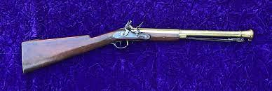
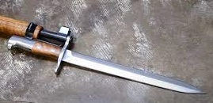
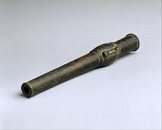
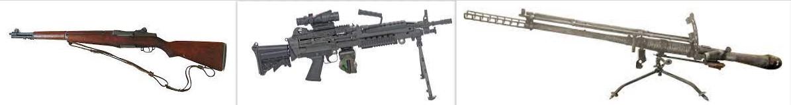
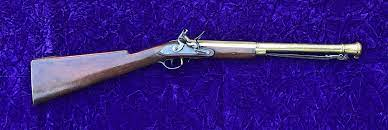
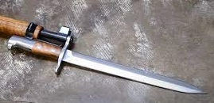
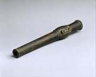
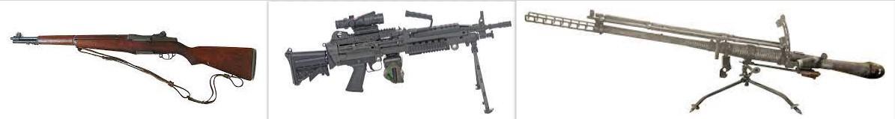

History of Weapons
The history of weapons is vast and spans over thousands of years, reflecting the evolution of technology, warfare, and societal changes.
Here's a brief overview of key milestones in the history of weapons:
Ancient Weapons (Prehistoric to ~500 AD):
Stone Tools:
Early humans used simple tools made of stone, such as hand axes and spears, for hunting and self-defense.Bow and Arrow:
The invention of the bow and arrow revolutionized hunting and warfare, providing a means for projectile-based attacks.Swords and Axes:
As societies developed metalworking skills, swords and axes became common weapons in various cultures, such as the Bronze Age civilizations of Mesopotamia and ancient Egypt.Catapults and Siege Weapons:
Ancient armies used siege weapons like catapults and battering rams for assaulting fortified structures.
Medieval and Renaissance Weapons (~500 AD to ~1600 AD):
Longbows and Crossbows:
Improved ranged weapons, such as the longbow and crossbow, played significant roles in medieval warfare.Plate Armor and Polearms:
Advances in armor led to the use of plate armor by knights, and polearms like halberds and pikes became popular infantry weapons.Gunpowder and Firearms:
The invention of gunpowder in China eventually led to the development of firearms. The first recorded use of firearms in battle occurred in the 14th century.
Early Modern Weapons (~1600 AD to ~1800 AD):
Musket and Bayonet:
Muskets, matchlocks, and flintlock firearms became standard military weapons. The bayonet, a blade attached to the muzzle of a musket, allowed infantry to fight both at range and in hand-to-hand combat.
Cannons and Artillery:
The use of cannons and artillery became widespread in both naval and land warfare.

Industrial Revolution to World Wars (~1800 AD to 1945):
Rifled Firearms:
The rifling of gun barrels improved accuracy, and breech-loading mechanisms increased the rate of fire.
Machine Guns:
The late 19th century saw the invention of machine guns, such as the Gatling gun and later the Maxim gun, which had a profound impact on infantry tactics.
Tanks and Aircraft:
The 20th century introduced mechanized warfare with the development of tanks and aircraft, changing the nature of battles.

Post-World War II to Present:
Assault Rifles and Modern Firearms:
The post-World War II era saw the development of assault rifles like the AK-47 and M16, becoming standard issue for many armed forces.
Guided Missiles and Nuclear Weapons:
The Cold War era brought about the development of guided missiles and nuclear weapons, adding new dimensions to warfare.
Technological Advances:
Musket and Bayonet:
Muskets, matchlocks, and flintlock firearms became standard military weapons. The bayonet, a blade attached to the muzzle of a musket, allowed infantry to fight both at range and in hand-to-hand combat.Cannons and Artillery:
The use of cannons and artillery became widespread in both naval and land warfare.
Industrial Revolution to World Wars (~1800 AD to 1945):
Rifled Firearms:
The rifling of gun barrels improved accuracy, and breech-loading mechanisms increased the rate of fire.Machine Guns:
The late 19th century saw the invention of machine guns, such as the Gatling gun and later the Maxim gun, which had a profound impact on infantry tactics.Tanks and Aircraft:
The 20th century introduced mechanized warfare with the development of tanks and aircraft, changing the nature of battles.
Post-World War II to Present:
Assault Rifles and Modern Firearms:
The post-World War II era saw the development of assault rifles like the AK-47 and M16, becoming standard issue for many armed forces.
Guided Missiles and Nuclear Weapons:
The Cold War era brought about the development of guided missiles and nuclear weapons, adding new dimensions to warfare.
Technological Advances:
Assault Rifles and Modern Firearms:
The post-World War II era saw the development of assault rifles like the AK-47 and M16, becoming standard issue for many armed forces.Guided Missiles and Nuclear Weapons:
The Cold War era brought about the development of guided missiles and nuclear weapons, adding new dimensions to warfare.Technological Advances:
Recent decades have witnessed advancements in precision-guided munitions, unmanned aerial vehicles (drones), and other high-tech weaponry.

The history of weapons continues to evolve with ongoing advancements in technology, materials, and tactics, shaping the nature of armed conflicts and defense strategies globally.